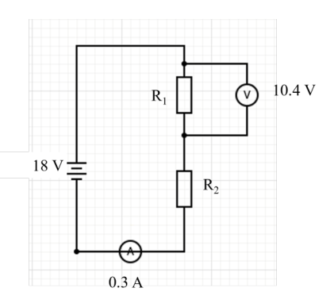
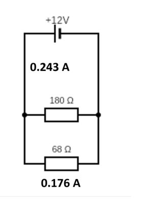
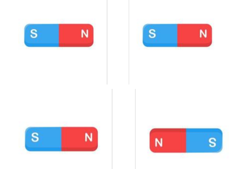
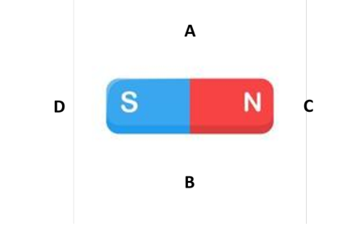
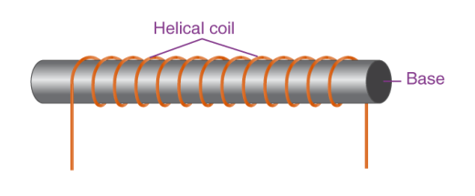
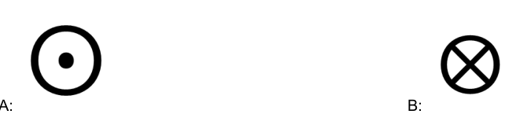
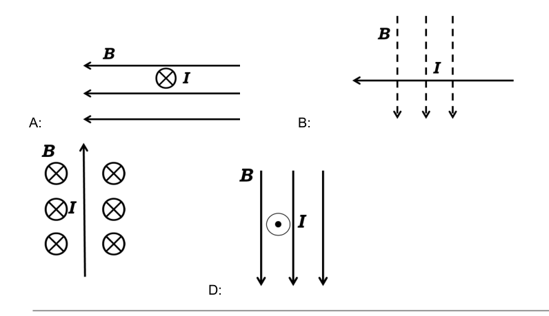
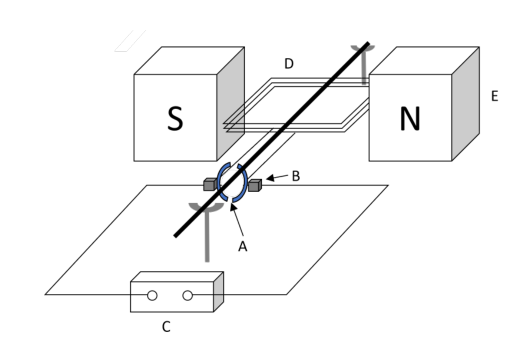
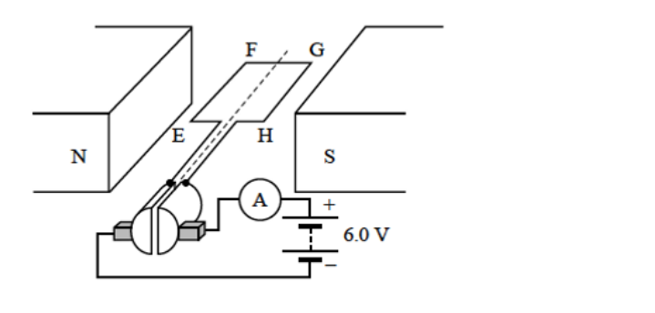

These practice questions cover the new content in the 2024 course: climate science, electricity, magnetism and heat. Marks are given as 1 per part as a guide.
Climate science: the carbon cycle
Write the equation for photosynthesis.
6CO2 + 6H2O → C6H12O6 + 6O2 (in the presence of light and chlorophyll).
Write the equation for the combustion of carbon: C + →
Explain why a forest can be considered a "carbon sink" that captures carbon from the atmosphere.
Through photosynthesis, trees take carbon dioxide from the atmosphere and convert it into glucose, so the carbon is stored in the trees' wood and leaves.
Electricity
Static electricity
What happens when two electrons are near each other?
They repel each other, because they have the same (negative) charge.
What happens when a negatively charged object is placed near a positively charged object? They .
If electrons are removed from a metal sphere, what is its overall charge?
Explain why a person standing on a chair and touching a charged Van de Graaff sphere has their hair stand on end.
Each hair becomes charged with the same charge (positive) as the sphere, so the hairs repel each other and stand on end to get as far apart as possible.
Ohm's law
Is copper an insulator or a conductor? Explain your answer.
Copper is a conductor: its electrons are free to move through the metal lattice, so current flows easily.
Explain why a 180 Ω resistor can be called ohmic. What would a graph of current against voltage look like?
An ohmic resistor's resistance stays constant (current is proportional to voltage), so the graph is a straight line through the origin (linear).
A 180 Ω resistor is connected to a 12 V battery. Calculate the current in the resistor.
I = V / R = 12 ÷ 180 = 0.067 A.
Draw (on paper) a circuit diagram of a 6 V battery connected to two globes in parallel, with an ammeter measuring the current in one globe and a voltmeter measuring the voltage across the other globe. Describe it, then compare.
The battery is connected to two branches, each with a globe. The ammeter is in series with one globe, in the same branch. The voltmeter is connected in parallel across the other globe.
Series and parallel circuits
Four 60 Ω resistors are connected in series. Calculate the total resistance.
60 + 60 + 60 + 60 = 240 Ω.
Describe the current through and the voltage across each resistor in the series circuit from Question 12.
The supply voltage is shared between the resistors; with four equal resistors it is shared equally (e.g. a 10 V supply gives 2.5 V each). The current is the same through every resistor in a series circuit.
Two 80 Ω resistors and a 60 Ω resistor are all connected in parallel. Calculate the total resistance.
1 / RT = 1/80 + 1/80 + 1/60 = 0.0417, so RT = 1 ÷ 0.0417 = 24 Ω.
Describe the current through and the voltage across each resistor in the parallel circuit from Question 14.
Each resistor has the same voltage as the supply (e.g. a 10 V supply gives 10 V across each). The current is shared between the branches, with the smaller resistor carrying more current.
Two 20 Ω resistors are connected in parallel. Calculate the total resistance.
1 / RT = 1/20 + 1/20 = 0.1, so RT = 10 Ω.

For the circuit above, find the current in each resistor and the voltage across R2.
Current in R1: A; current in R2: A; voltage across R2: V
In series the current is the same everywhere. V2 = 18 − 10.4 = 7.6 V.

For the circuit above, find the current through and voltage across the 180 Ω resistor.
Current: A; voltage: V
I = 0.243 − 0.176 = 0.067 A. In parallel, each branch has the full 12 V.
Magnetism

Draw (on paper) the magnetic field lines around the pairs of magnets shown. Describe them, then compare.
Field lines leave N poles and enter S poles, never crossing. Where an N pole faces an S pole, lines go straight across the gap (attraction). Where two N poles face each other, the lines from each pole curve away from each other, leaving a neutral point in the middle (repulsion).

Which way would a compass point at each position?
Label A: B: C: D:
A compass points along the field, which goes from N to S around the outside of the magnet: above and below the magnet it points left (from N back to S); beyond the N pole it points away (right); beside the S pole it points into the S pole (right).

State two ways of increasing the strength of the magnetic field of the solenoid above.
Increase the current in the wire; increase the number of turns in the coil. (Adding an iron core also works.)

Which direction do the symbols above show?
Label A: B:
Current is directed into the page. Using the right-hand grip rule, the magnetic field around the wire is and .

Use the right-hand slap rule to find the direction of the force on the wire in each example.
Label A:
Label B:
Label C:
Label D:
Electric motors

Identify the labelled components: coil, magnet, split-ring commutator, DC power supply, brush.
Label A:
Label B:
Label C:
Label D:
Label E:

Use the right-hand slap rule to find the direction of the force on side EF of the motor. (The current in EF flows out of the page, from F to E; the field goes from N to S, to the right.) Force:
Which way will the motor initially rotate, viewed from the front of the coil?
The force on EF is up and the force on GH is down, so the coil turns clockwise.
Heat
Convert:
- −171 °C = K
- 320 K = °C
K = °C + 273.
Classify each as a heat conductor or insulator.
Air: Water: Iron: Plastic:
Water is a much poorer conductor than metals, but conducts heat far better than air.
Identify the type of heat transfer in each example: (a) a toaster; (b) water in a pot sitting on hot coals in a campfire (from the coals to the pot, and within the pot); (c) solar energy from the Sun to the Earth.
(a) Radiation. (b) Conduction from the coals to the pot; convection in the water inside the pot. (c) Radiation.